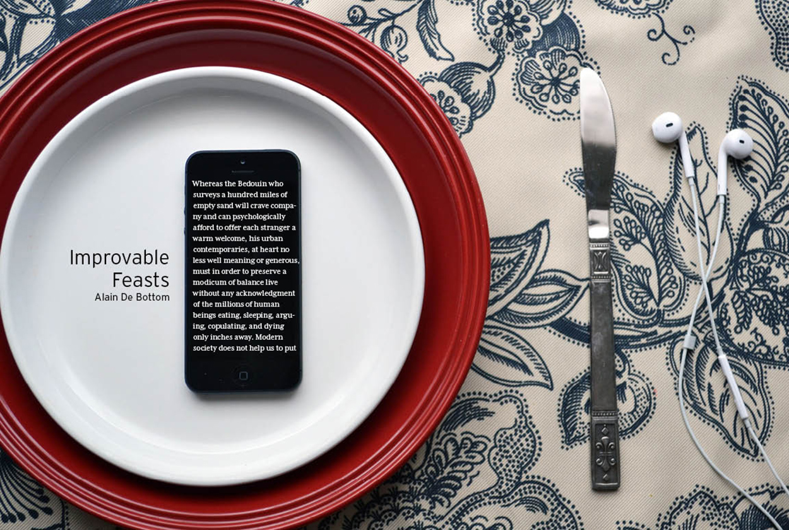
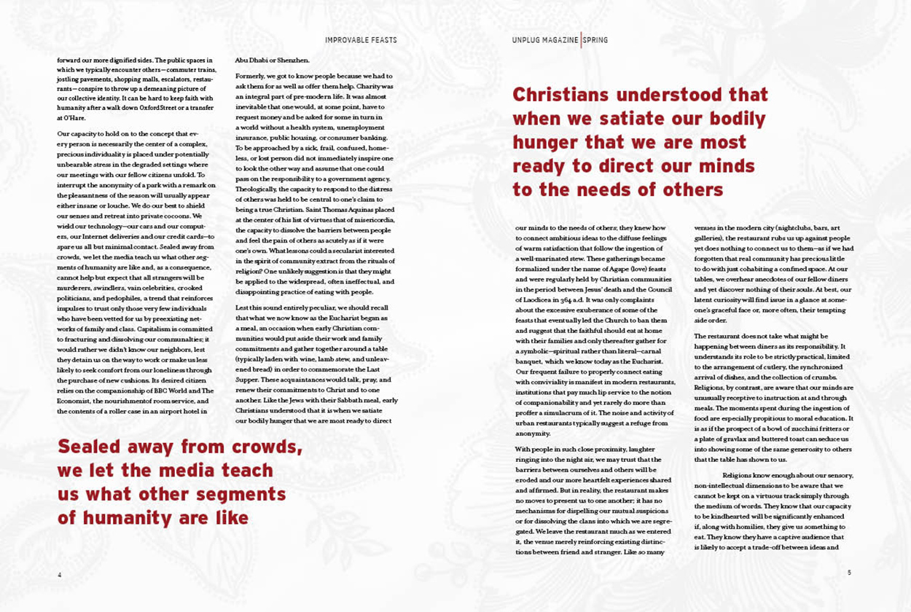
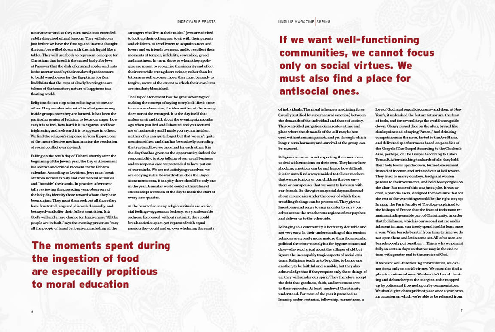
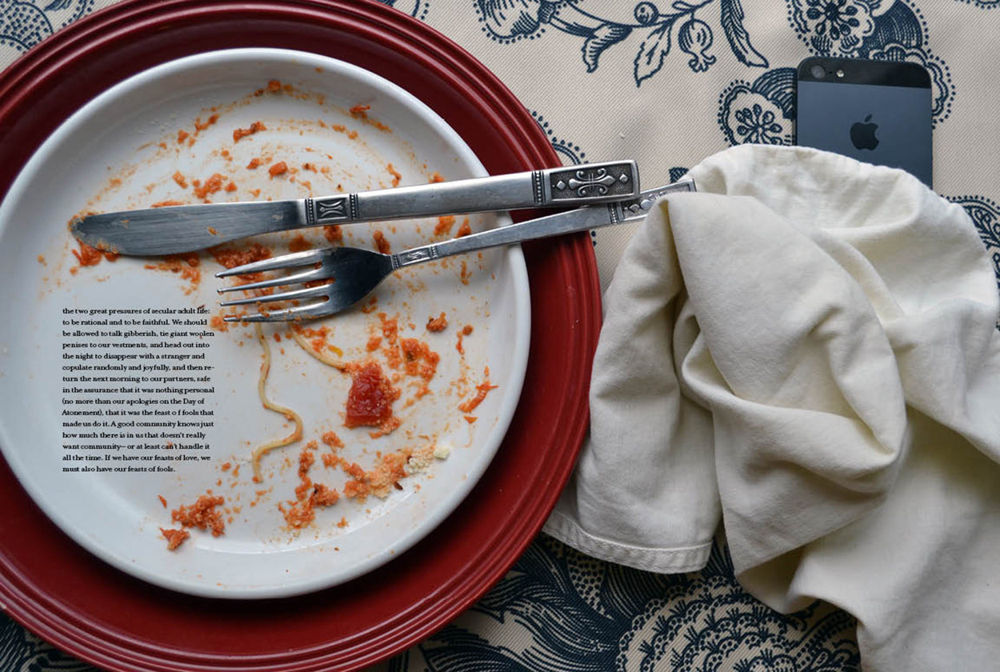

Improvable Feasts
This is an article written by Alain De Bottom on the values of the family lifestyle and the disconnect from the media oriented world. The design of the spread focuses on the idea of sitting down to eat with family and unplugging from electronic devices in order to be a more grounded and successful person.
Graphic Design 2014



